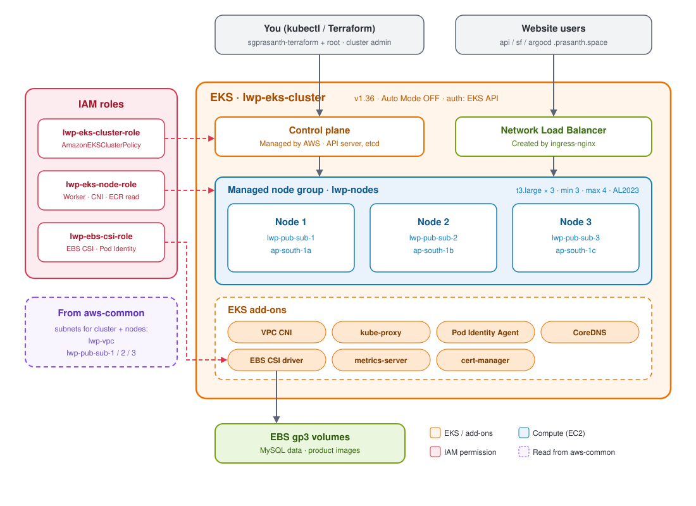
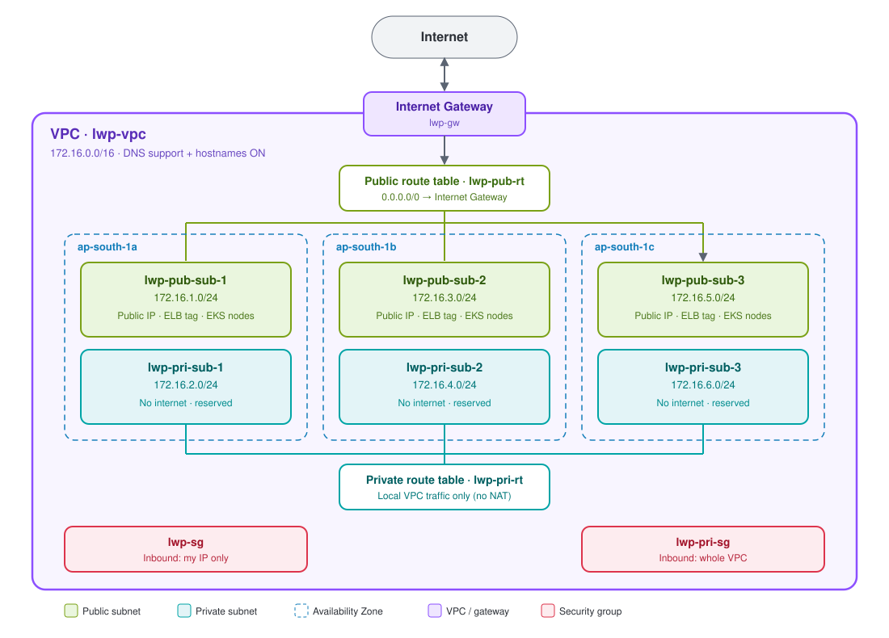

E-commerce platform on Amazon EKS, deployed with GitOps
An end-to-end deployment of an open-source e-commerce stack (Vendure API and Angular storefront) on AWS. Infrastructure is code, every deployment comes from Git, and no password is stored in plain text.


- Provisioned a multi-AZ VPC and an EKS cluster with a managed EC2 node group using Terraform, split into a network layer and a cluster layer.
- Built GitHub Actions pipelines that build the API and storefront images and push them to Amazon ECR.
- Deployed every service through Argo CD with automated sync, self-healing and pruning from one manifest repository.
- Generated Sealed Secrets in a GitHub Actions workflow, so the public repository holds only encrypted credentials.
- Routed traffic through an ingress-nginx Network Load Balancer with Let's Encrypt certificates issued by cert-manager.
- Ran MySQL as a three-node Group Replication StatefulSet on encrypted EBS volumes.
- Added a CronJob, authorised through EKS Pod Identity, that rolls out new images as soon as they reach ECR.
- Terraform
- Amazon EKS
- EC2
- VPC
- ECR
- GitHub Actions
- Argo CD
- Kubernetes
- Helm
- ingress-nginx
- cert-manager
- Sealed Secrets
- MySQL
Show the VPC network design

git push → GitHub Actions builds the image → Amazon ECR
↓
Argo CD syncs the manifests ← CronJob detects the new image digest
↓
Amazon EKS rolls out the new pods behind ingress-nginx and HTTPS
terraform
VPC and EKS cluster, IAM roles, add-ons and Pod Identity.
argocd
Kubernetes manifests, Sealed Secrets workflow and ingresses.
vendure-back-api
API Dockerfile and the build pipeline to ECR.
vendure-front-sf
Storefront Dockerfile and the build pipeline to ECR.
Experience
5.5+ years in IT, the last three running AWS infrastructure for a production microservices environment.
-
Apr 2026 – presentChennai, remote
Associate DevOps Engineer
KlioTech LLP, promoted from System Administrator
- Manage production and staging on AWS (EC2, VPC, IAM, RDS, S3, Lambda, CloudWatch) at 99.9% uptime across 15+ servers.
- Build Jenkins and GitHub Actions pipelines for zero-downtime releases, and provision infrastructure with Terraform.
- Containerise applications with Docker, push to Amazon ECR, and deploy on ECS Fargate and Amazon EKS.
- Automated certificate issuance and renewal for 1,000+ domains with Certbot and Let's Encrypt, ending expiry outages.
- Monitor with Prometheus, Grafana, ELK and CloudWatch, and enforce least-privilege IAM and Secrets Manager.
-
Dec 2023 – Apr 2026Chennai, remote
System Administrator
KlioTech LLP
- Administered 15+ Ubuntu servers: maintenance, updates, troubleshooting and availability.
- Deployed applications with GitHub, Jenkins, Nginx and Apache, and managed AWS resources and IAM access.
- Handled backup and recovery, certificate renewals, health checks and maintenance automation.
-
Feb 2021 – Sep 2023Chennai, on-site
Desktop Support Engineer
Fussion BPO Services
- Resolved L1 and L2 issues across operating systems, hardware, software and networks.
- Supported LAN, WAN and VPN connectivity, device provisioning and onboarding.
Skills
- AWS
- EC2, VPC, S3, RDS, IAM, Lambda, ECS Fargate, ECR, EKS, ALB, Route 53, CloudFront, CloudWatch, Secrets Manager, ACM
- Azure
- Virtual Machines, VM Scale Sets, VNet, Application Gateway, Front Door, Azure Monitor, Entra ID
- CI/CD and GitOps
- Jenkins, GitHub Actions, Argo CD, AWS CodeDeploy, Git
- Infrastructure as code
- Terraform
- Containers
- Docker, Docker Compose, Kubernetes, Amazon EKS, Amazon ECS, Helm, ingress-nginx, cert-manager, Sealed Secrets
- Monitoring
- Prometheus, Grafana, ELK and EFK stacks, CloudWatch, Azure Monitor, Sentry
- Linux and networking
- Linux, Nginx, Apache, HAProxy, DNS, TCP/IP, SSL/TLS, OpenVPN, WAF
- Scripting
- Bash, Python